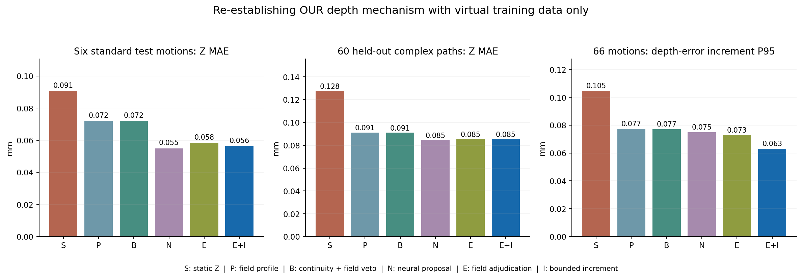
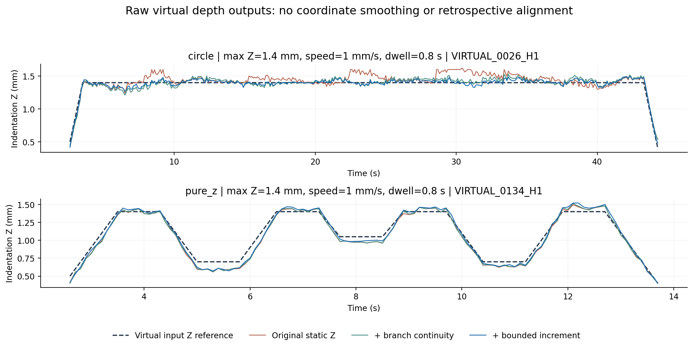
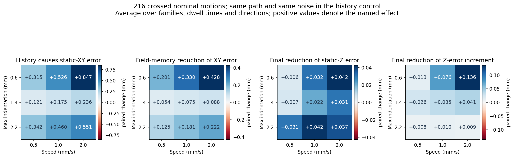
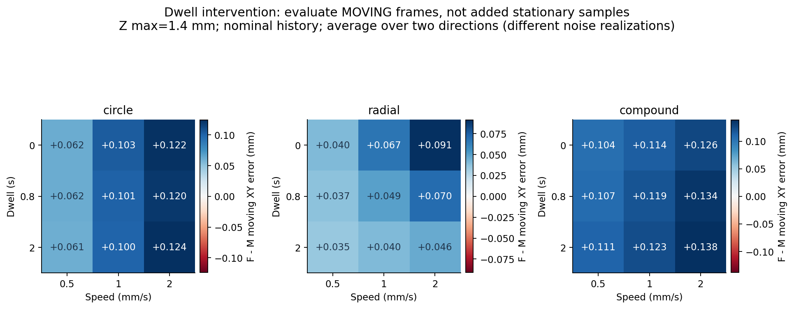
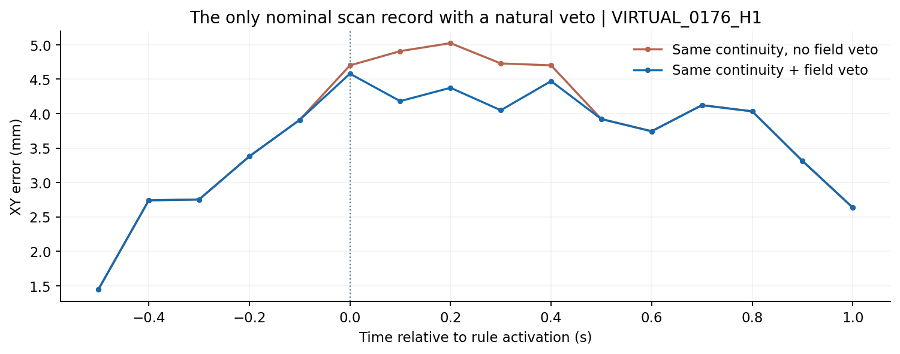
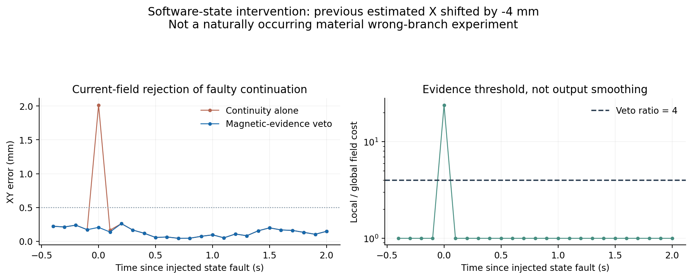

研究数据已经可以批量产生、重复对照
涵盖圆、八方向、垂直压入撤出与XY–Z复合动作；压深0.6/1.4/2.2 mm，速度0.5/1/2 mm/s，停驻0/0.8/2 s与两种方向。每组历史关闭、标称响应和增强历史共用同一路径、时刻和噪声。
生成耗时不包括逆模型回放、训练和真实装置准备。648条不是648个独立器件：只有一个源器件经验生成器，216组条件含配对控制；垂直动作正反版本是程序性重复控制。仿真数据始终带来源标识。
现在补齐了虚拟Z训练与消融链条
只有12条标准虚拟动作和虚拟静态锚点用于训练，6条标准虚拟动作选参。保持同一个XY估计与输出许可，逐层检验深度剖面、连续分支、56维因果神经提议、磁证据裁决与59维有界增量；不是拿另外的读出器替代我们的算法。

| 深度机制 | 66条动作：Z MAE / mm 相对原始静态Z | 误差相邻变化P95 / mm | 移除固定偏移的诊断 / mm |
|---|---|---|---|
| 原始静态Z | 0.124 (+0.0%) | 0.105 | 0.122 |
| 当前磁场深度剖面 | 0.089 (-28.0%) | 0.077 | 0.089 |
| 磁证据保护的连续分支 | 0.089 (-28.0%) | 0.077 | 0.089 |
| 因果神经网络提议 | 0.082 (-34.0%) | 0.075 | 0.081 |
| 磁场证据裁决 | 0.083 (-33.2%) | 0.073 | 0.082 |
| ＋有界快慢增量 | 0.083 (-33.4%) | 0.063 | 0.082 |
主分数未配准；“移除固定偏移”只是同一记录估出的诊断，不是独立校准。误差相邻变化是Δ(Z估计−Z输入)，含动态参考变化，不能称为纯恒深抖动。虚拟深度头重新训练，未读取实物正式权重；本轮深度只运行一个声明的初始化，XY层五次初始化见前一报告。

原始深度曲线、误差均保存。不对输出做EMA、事后时间平移或轨迹拟合。这里采用共同70 µT响应门，不包含完整UI的浅层动作识别器。
速度、压深、停驻和反转：可重复的虚拟实验

| 虚拟世界（各216条） | 静态→慢记忆 XY / mm | 原始静态Z→完整深度 Z / mm | 自然激活的XY / Z分支否决 |
|---|---|---|---|
| 历史关闭控制 | 0.098 → 0.101 | 0.019 → 0.032 | 0 / 0 |
| 标称经验响应 | 0.494 → 0.305 | 0.088 → 0.061 | 1 / 0 |
| 历史放大压力测试 | 1.226 → 0.863 | 0.171 → 0.131 | 41 / 0 |
λ=2只用于反事实压力测试，不是已校准的新材料；λ=0是历史关闭控制。三个世界分开统计，不把它们混合成器件泛化结论。历史开关的热图仅用双臂共同输出帧；定位层消融采用同一磁场流和共同门控。

停驻效应单独统计移动帧，避免“多停一会儿、增加易估计的静止帧”就被误判为松弛改善。不同方向数据均保留；方向条件使用不同噪声种子，不把两个方向差值当独立材料因果效应。
查看每一组实验：磁场输入与实际逆解输出
黑虚线：生成器输入动作；灰线：瞬时静态逆解；蓝线：所选逆解模块。坐标不平滑、不配准，未输出帧断线。网页回放Python实际计算输出，不是假装浏览器实时运行网络。
| 节点 | ΔBx / µT | ΔBy / µT | ΔBz / µT |
|---|
错误分支保护：自然响应与状态干预分开

标称216条中仅一条自然触发一次XY磁证据否决。该记录仅改变否决规则的纯消融，XY平均误差0.927→0.910 mm；触发时拒绝局部分支的误差4.700 mm，接受全局解仍为4.580 mm。因此不能说“触发否决就解决了空间歧义”。增强历史压力世界触发41次；标称与压力世界分别报告。
所有25条自然触发记录，加4条预先固定的标称控制，均做无→有否决配对，合计29条。这个集合按触发筛出，仅用于诊断，不是无偏的全扫描收益评估。
另外，对四类固定动作和五种预先声明偏移，向“上一帧估计位置”施加相同扰动；对照只有连续性和加入四倍磁证据否决。初始化不读取指令坐标，20组干预全部报告。

软件状态干预可以验证否决规则是否拒绝磁场不支持的延续，但不能证明经验生成器自然复制了实物的错误逆解分支。此次20组只触发2次否决，不夸大为普遍巨大收益。
查看全部20组干预
| 动作 | 上一估计XY扰动 / mm | 2秒窗XY误差：无→有保护 | 否决次数 |
|---|---|---|---|
| circle | [0.0, 0.0] | 0.072 → 0.072 | 0 |
| circle | [4.0, 0.0] | 0.072 → 0.072 | 0 |
| circle | [-4.0, 0.0] | 0.072 → 0.072 | 0 |
| circle | [0.0, 4.0] | 0.072 → 0.072 | 0 |
| circle | [0.0, -4.0] | 0.072 → 0.072 | 0 |
| radial | [0.0, 0.0] | 0.116 → 0.116 | 0 |
| radial | [4.0, 0.0] | 0.116 → 0.116 | 0 |
| radial | [-4.0, 0.0] | 0.116 → 0.116 | 0 |
| radial | [0.0, 4.0] | 0.120 → 0.120 | 0 |
| radial | [0.0, -4.0] | 0.116 → 0.116 | 0 |
| pure_z | [0.0, 0.0] | 0.133 → 0.133 | 0 |
| pure_z | [4.0, 0.0] | 0.133 → 0.133 | 0 |
| pure_z | [-4.0, 0.0] | 0.133 → 0.133 | 0 |
| pure_z | [0.0, 4.0] | 0.133 → 0.133 | 0 |
| pure_z | [0.0, -4.0] | 0.133 → 0.133 | 0 |
| compound | [0.0, 0.0] | 0.123 → 0.123 | 0 |
| compound | [4.0, 0.0] | 0.123 → 0.123 | 0 |
| compound | [-4.0, 0.0] | 0.210 → 0.123 | 1 |
| compound | [0.0, 4.0] | 0.123 → 0.123 | 0 |
| compound | [0.0, -4.0] | 0.201 → 0.123 | 1 |
用仿真提出下一轮值得验证的问题
按照同一算法各机制的输出分歧排序标称动作，未用指令误差选排名，也不把模块分歧称为校准后的物理不确定性。下面是探索性候选，不是已经下发给设备的采集计划。
| 动作 | 压深 / 速度 / 停驻 / 方向 | 静态与完整机制分歧 / mm |
|---|---|---|
| circle | 0.6 / 2.0 / 0.0 / 1 | 1.100 |
| compound | 0.6 / 2.0 / 0.8 / 1 | 1.091 |
| compound | 0.6 / 2.0 / 0.0 / 1 | 1.061 |
| circle | 0.6 / 2.0 / 0.0 / -1 | 1.058 |
| compound | 0.6 / 2.0 / 0.0 / -1 | 1.038 |
| circle | 0.6 / 2.0 / 0.8 / 1 | 1.036 |
| circle | 0.6 / 2.0 / 0.8 / -1 | 1.005 |
| compound | 0.6 / 2.0 / 0.8 / -1 | 0.998 |
| circle | 0.6 / 2.0 / 2.0 / 1 | 0.935 |
| circle | 0.6 / 1.0 / 0.0 / 1 | 0.921 |
| circle | 0.6 / 2.0 / 2.0 / -1 | 0.890 |
| compound | 0.6 / 1.0 / 0.0 / 1 | 0.874 |
先检查已有实测是否覆盖这些动作，再结合独立实测或物理求解器检验。若经验生成器没有复现某个实物现象，首先审查正向表示和训练覆盖，而不是强行调逆模型得到期望结论。
供后续模型研究使用的数据与复现入口
下载648条虚拟记录、预测、结果、协议与研究代码包 · 逐条件消融指标 CSV · 标称磁场NPZ · 独立动作标签NPZ
每条记录保留15维磁场、时刻、有效性、reset、动作参考与数据版本；观测、参考和逆解输出分别保存。216条标称记录可直接用作因果窗口、序列网络和样本效率研究的输入，但本次角色是测试数据：若以后用来训练，需要新建独立测试集，并按完整动作/几何分组，不能随机打散相邻帧。
当前生成器是实测拟合的经验模型，不是独立有限元仿真。没有操作硬件、改动实测CSV、正式模型或论文。多点触碰与未测三维空间磁场仍需与独立物理求解、留出测点联合验证，不能直接把单点磁场相加当成答案。